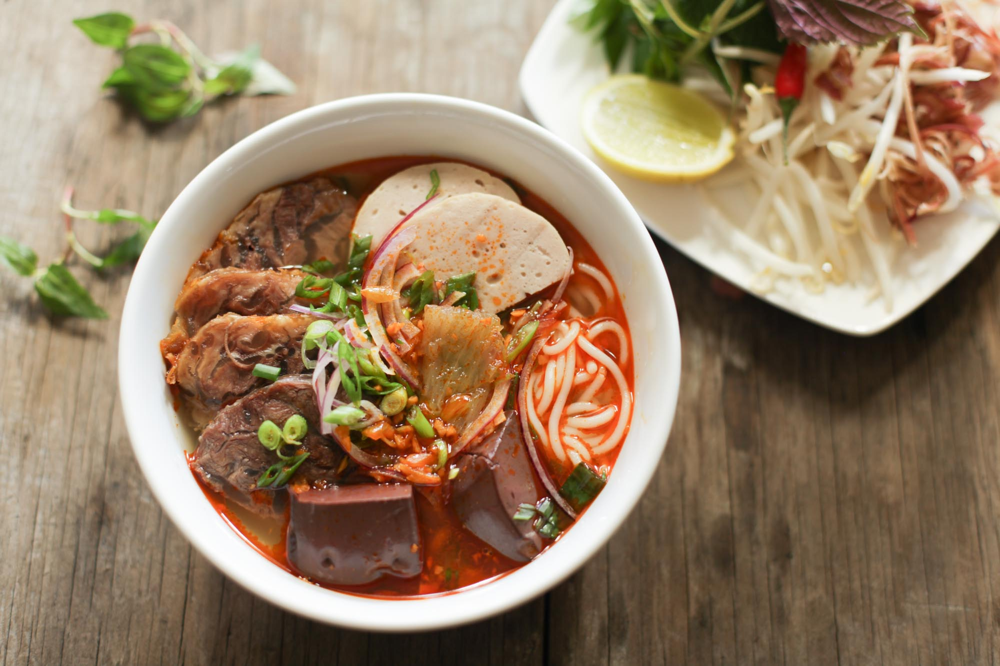

Bún Bò Huế
Linh hồn của đất cố đô
Bún bò Huế là tiếng gọi thức giấc của cả thành phố — mỗi buổi sáng sớm, mùi sả nướng và mắm ruốc từ các gánh hàng rong đã lan tỏa khắp từng ngõ nhỏ. Điểm khác biệt làm nên linh hồn tô bún chính là nước dùng được ninh từ xương heo, giò heo và sả tươi giã dập, sau đó nêm mắm ruốc Huế đặc quánh — thứ gia vị không thể thiếu để tạo nên độ đậm đà nguyên bản và màu đỏ đặc trưng. Sợi bún to tròn mềm dai, điểm cùng lát thịt bò thái mỏng, chả cua nâu sẫm và viên giò heo thơm. Ăn kèm bắp chuối bào mỏng, rau thơm và muỗng ớt sa tế cay nồng — tô bún bò Huế là sự tổng hòa hoàn hảo giữa cay, mặn, ngọt và chua thanh.